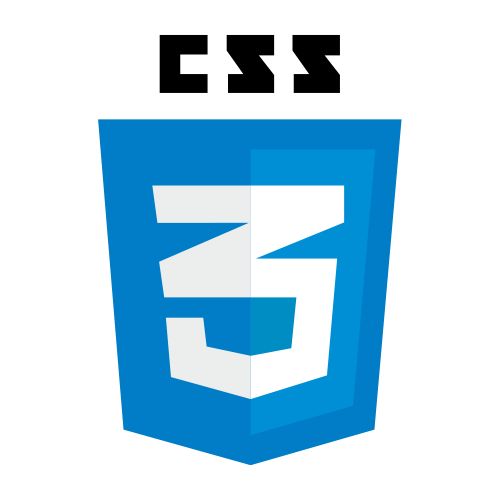
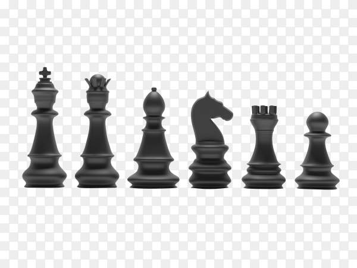

درباره من
از بچگی همیشه کنجکاو بودم یادم اسباب بازی هامو میشکوندم که ببینم از چی درست شدن مدرسه که رفتم بچه آروم تری شدم ولی کنجکاویم کم نشد یکم که بزرگ تر شدم با خیلی چیزا آشنا شدم مثلا به ورزش هایی علاقه مند شدم مثل شطرنج و تکواندو که تونستم توشون مدل هم بیارم به بازی های ویدئو ای که خیلی علاقه مندم از همون بچگی تو کلوپ ها و... دنبال بازی بودم به درس هایی مثل ریاضی که عاملی شد که من به رشته ریاضی برم وقتی وارد دبیرستان شدم کرونا همه گیر شد و مجبور شدیم به صورت مجازی درس هارو بگذرونیم که همین باعث شد ما بیشتر با لپتاپ و گوشی بگذرونیم که موجب شد که به من بیشتر به سمت رشته کامپیوتر کشیده بشم البته علاقه من بیشترش بخاطر بازی های ویدیویی بود یعنی علاقه من به ساخت بازی عامل اصلی من کشیده شدنم به سمت رشته کامپیوتر بود ولی در کل توی دوران کرونا زیاد نشد که درس هارو به صورت خوب و کنکوری بخونم و کنکور سال اول و نتونستم خوب بدم و مجبور شدم یکسال پشت کنکور بمونم که بتونم به رشته کامپیوتر بیام و هیمن شد که الان من دانشجوی این دانشگاه هستم و دارم توی رشته مورد علاقه ام تحصیل میکنم.
مهارتها
- python
- html
- css 


علاقهمندیها
- شطرنج 
- بوکس
- برنامه نویسی